Đảo Thổ: concept năm tướng đầu (con sau chiến hơn con trước)
1. thú nhỏ cõng đá (ải 1, cong_da)
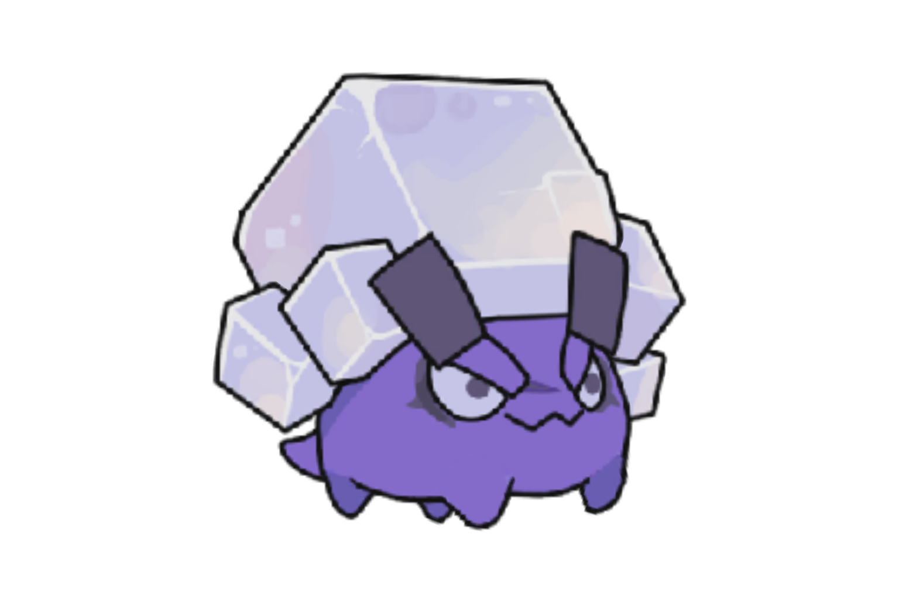
Con gốc monster_3378 L1_C: tatu con mai đá, hốc đá vỡ lộ cụm hổ phách
L1_C: tatu con mai đá, hốc đá vỡ lộ cụm hổ phách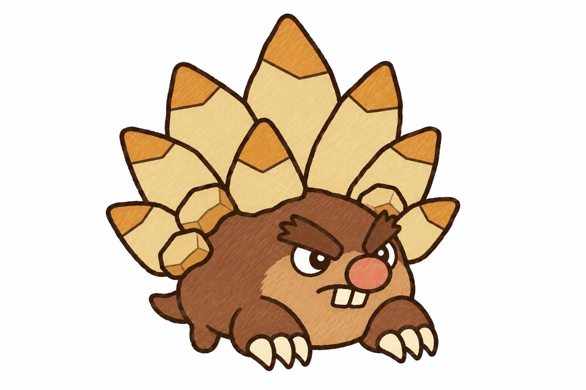
L1_D: chuột chũi vuốt đào, lưng xoè gai đá như nhím2. thằn lằn sa mạc (ải 5, than_lan_cat)
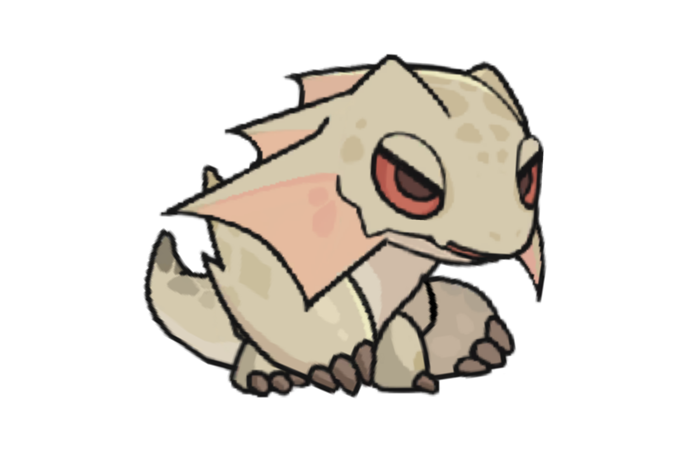
Con gốc monster_3257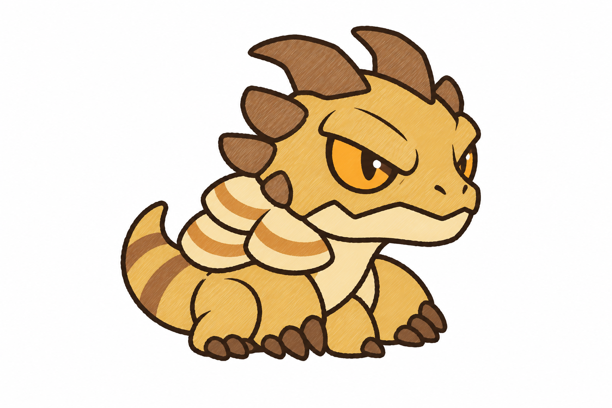
L1_C: thằn lằn sừng sa mạc, vương miện sừng đá, cổ áo ngắn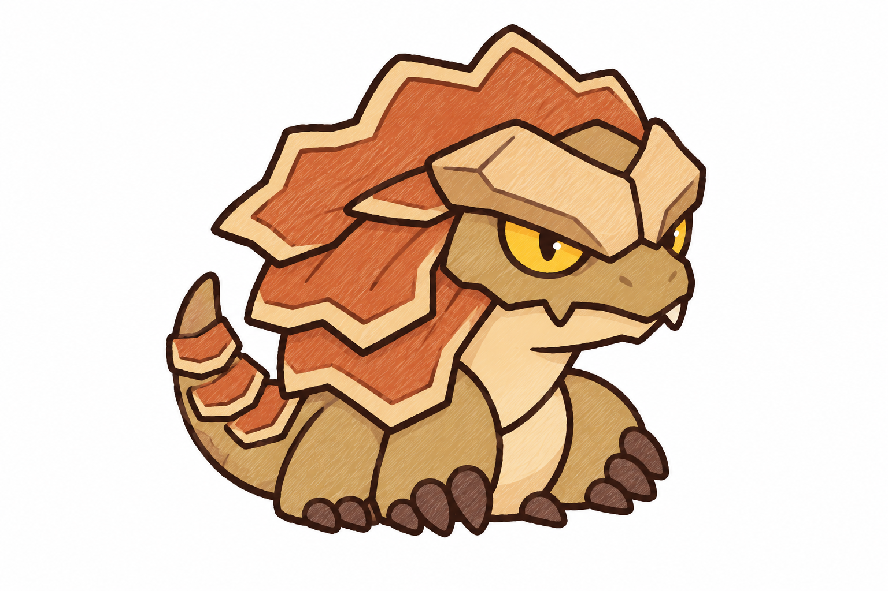
L1_D: thằn lằn giáp áo choàng phiến đất nung3. thú đá hàm lớn (ải 10, thu_da)
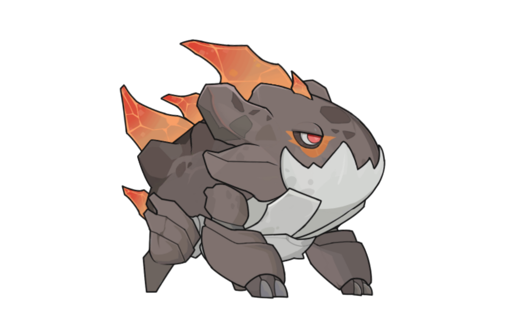
Con gốc monster_3525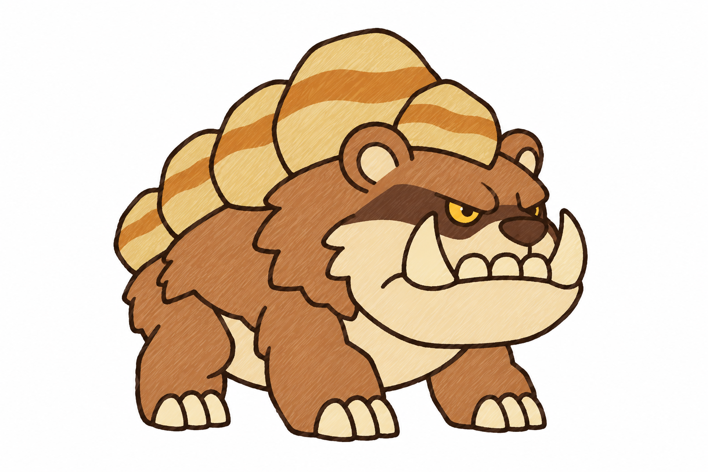
L1_C: chó lửng đất răng nanh, sống lưng tảng sa thạch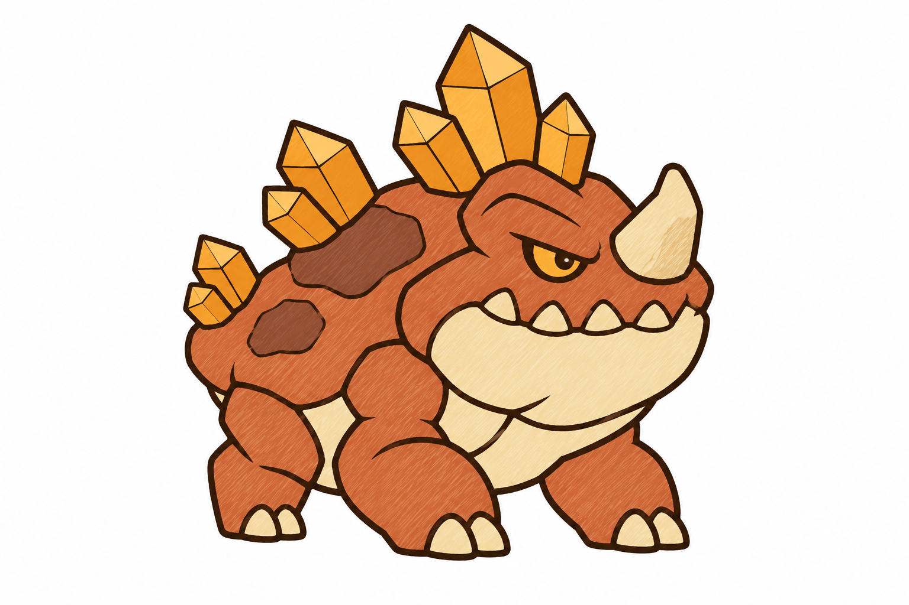
L1_D: cóc tê giác đất nung, cụm pha lê hổ phách trên lưng4. rồng cát (ải 15, rong_cat)
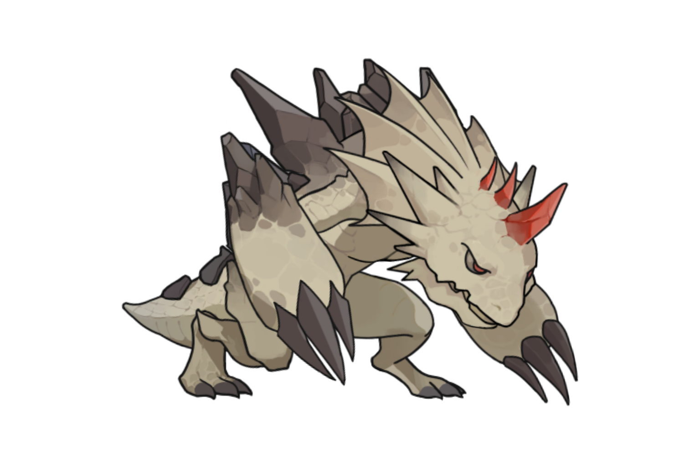
Con gốc monster_3424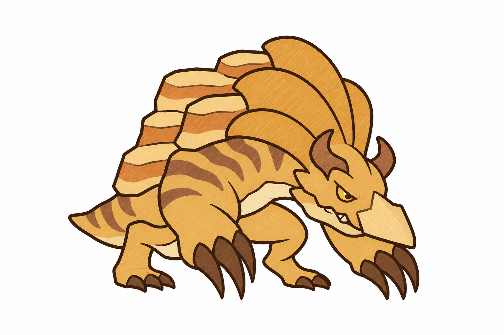
L1_C: rồng đào cát, sừng xẻng trên mõm, lưng phiến sa thạch như núi bàn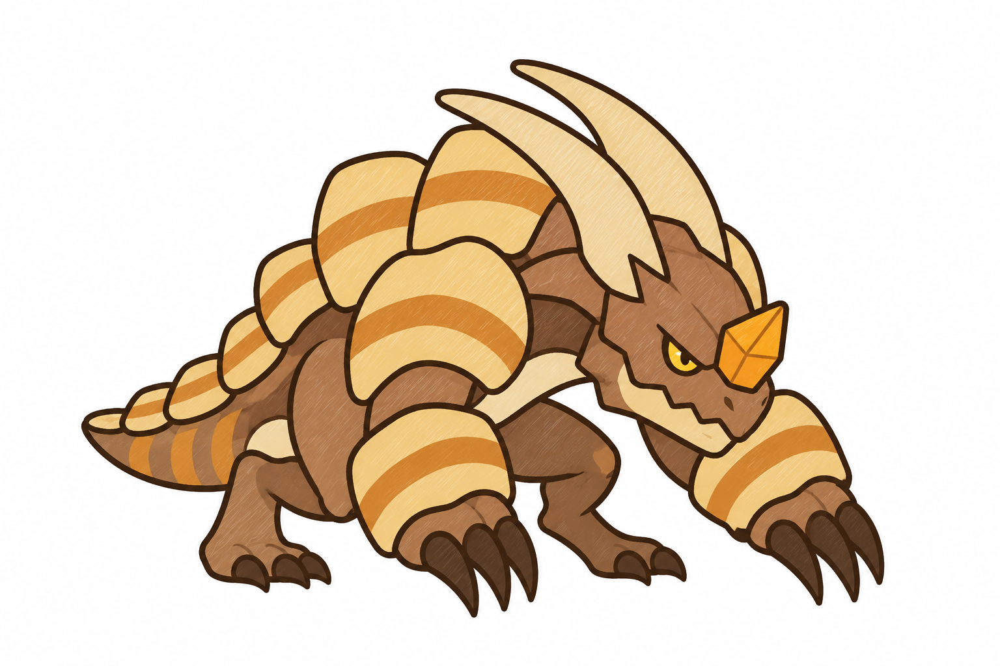
L1_D: rồng giáp đá, giáp sa thạch vai và sống lưng, hai sừng dài vuốt ra sau, sừng mũi hổ phách5. titan núi bốn tay (ải 20, quy_nui)
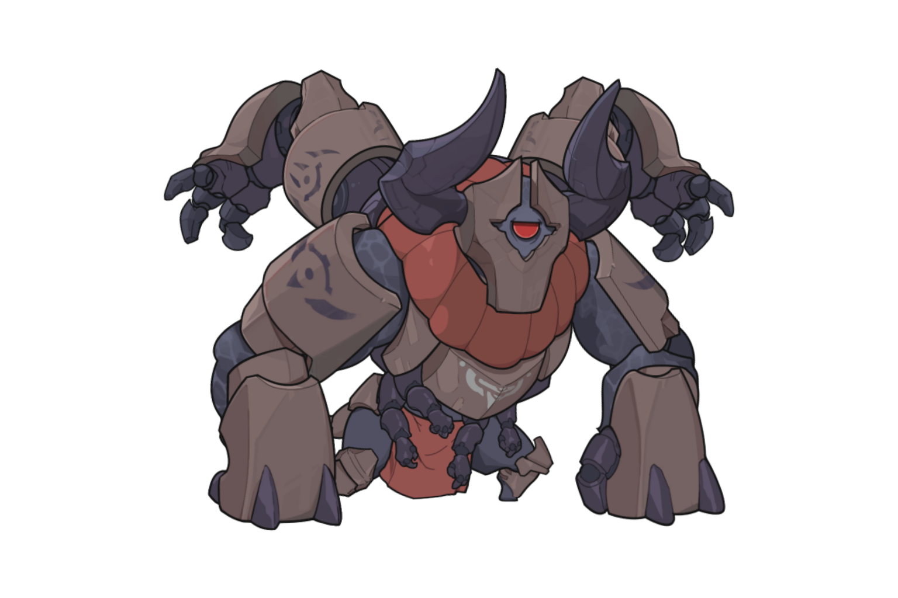
Con gốc monster_3612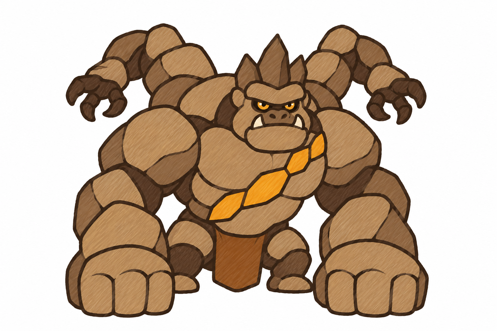
L1_C: vượn núi đá bốn tay, mặt khỉ đột, vương miện gai đá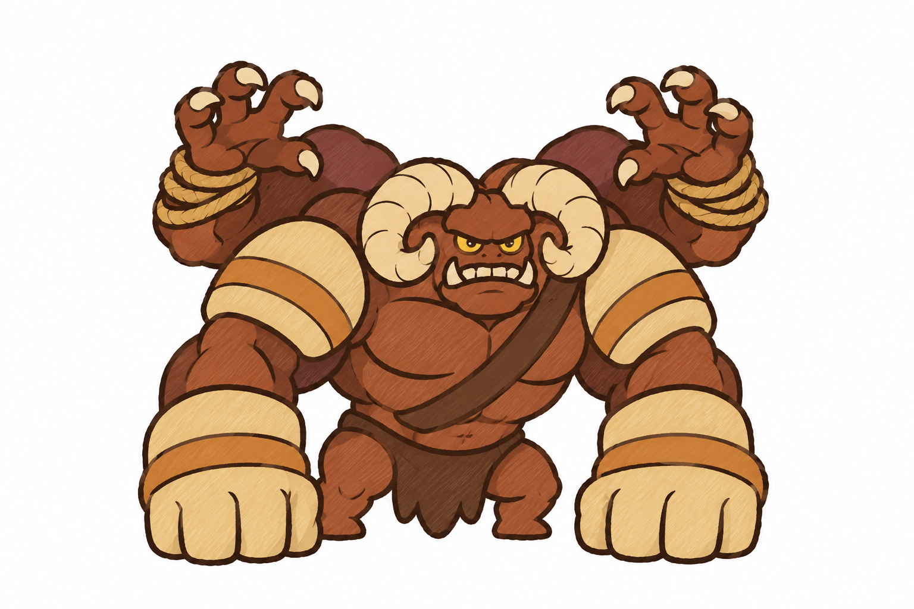
L1_D: quỷ đất bốn tay sừng cừu xoắn, giáp sa thạch vai và nắm đấm